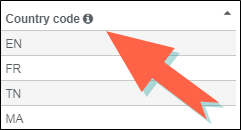
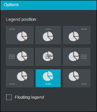
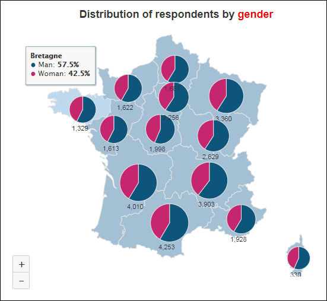
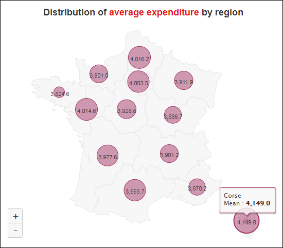

Distribute data on a geographical map
In the case of a postal code type variable, a geographic map type graph is adapted to represent where the answers come from in the different regions of France or the World.
In order to set up a map, proceed as follows:
-
Click on the
 button.
button. -
Select Advanced analysis.
-
Click on Geographic map.
-
Select the base map to use.
Five base maps are available: French regions and departments, French municipalities, Europe and World maps, World countries, and Customized maps.
-
Select the source variable ("postal code" or "country" variable for example).
-
Integrate your location data by defining the mapping between the variable used and the geographical entities associated with the map.
EXAMPLE: For countries, a code is associated with each country, France = FR, Germany = DE, etc.
-
Click to download the list of names/codes in Excel format.

-
You can manually copy/paste a list of names/codes by clicking on the Import data button.
-
-
Click on the "Finish" button to validate.


Geographic Map Options
The geographical map graphic is represented by the icon .
-
To zoom in or out on the map, use the +/- button or with the mouse cursor.
-
To choose the value to display on the map, click on the drop-down menu and choose the value to display.
Available values: Count, Percentage, Mean, Sum, Median, Standard Deviation, Maximum, Minimum.
-
You can color the regions as the most cited modality for the values: Count and Percentage, to do this:
Check the color according to the most cited modality box.
EXAMPLE: The Bretagne region is colored purple since the modality "Less than 12" is the most cited modality.


-
To change the position of the legend, check the legend option, click and choose the desired position.

NOTE: It is possible to cross a variable of type code with other variables while using a geographic map as graphic:
Learn more about performing cross sorting.
 Distribution of respondents by gender |
 Distribution of average expenditure by region |


You can also use the map to filter your analysis:

Please click on the image for an animated preview
Learn more about filtering an analysis.